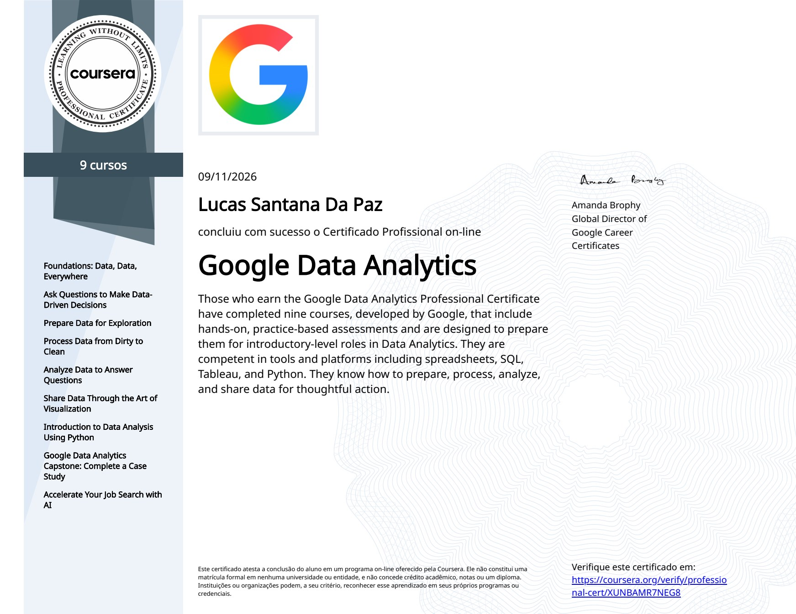
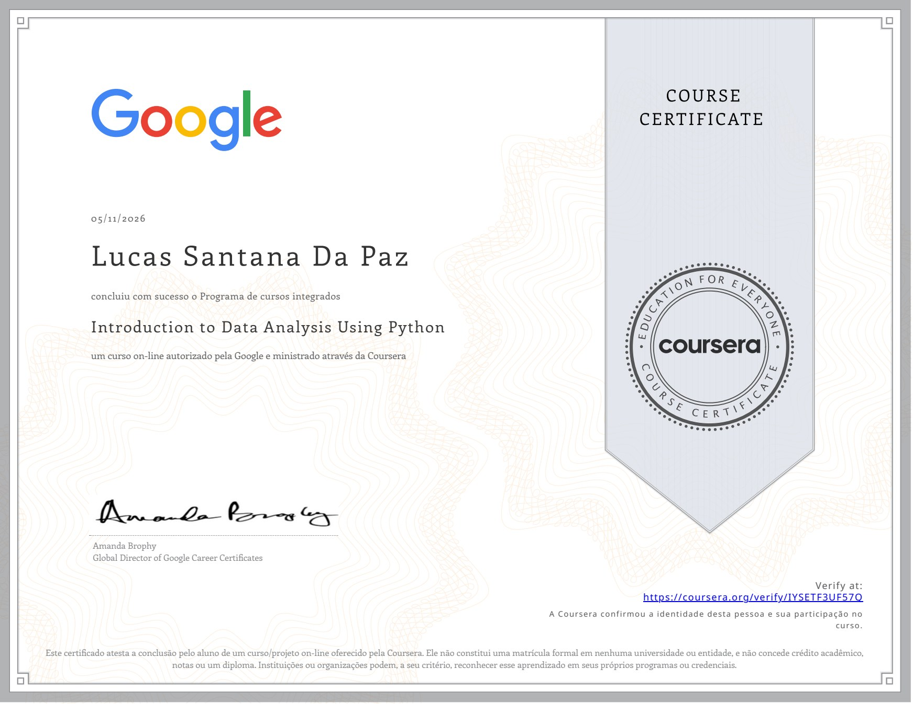
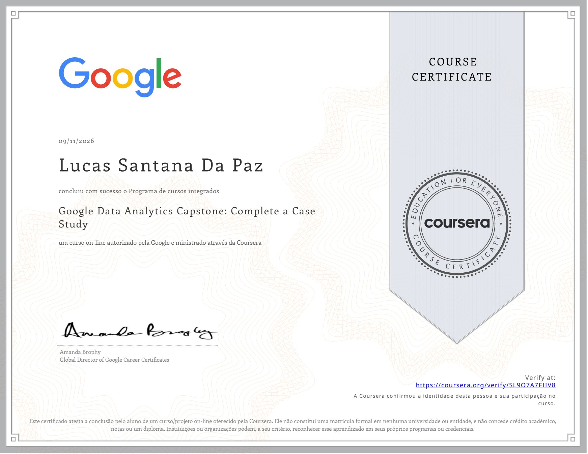

OmniOps AI
Plataforma DevSecOps para análise de código, detecção de vulnerabilidades e apoio à correção.
Disponível para novos projetos
PORTFÓLIO PESSOAL · BELO HORIZONTE
Desenvolvimento Web | Sistemas Empresariais e ERP | SQL | Automação e IA
Estudante de Análise e Desenvolvimento de Sistemas com experiência profissional em suporte técnico ao ERP TecFood na Teknisa. Unindo a investigação de sistemas à construção de interfaces funcionais.
Perfil em resumo
Estágio · Suporte Técnico
Suporte ao ERP TecFood na Teknisa
Outras experiências: Newcity Car — Vistoriador veicular (2024–2025) · Pirelli — Logística (2021)
Ver detalhes da experiênciaDesenvolvimento Web
Prática em projetos
HTML5, CSS3 e layouts responsivos · JavaScript e manipulação de DOM
Sistemas e Dados
Experiência profissional
ERP TecFood em suporte · consultas SQL básicas para diagnóstico
Automação e IA
Em estudo
Automação com n8n, consumo de APIs e uso de LLMs
EXPERIÊNCIA PROFISSIONAL
Atuação técnica em software de gestão empresarial, com foco em atendimento, investigação e resolução de problemas.
Atuação no suporte ao ERP TecFood, solução voltada à gestão de empresas do setor de alimentação.
PROJETOS SELECIONADOS
Uma seleção dos projetos que desenvolvi, com acesso direto às demonstrações e ao código.
Plataforma DevSecOps para análise de código, detecção de vulnerabilidades e apoio à correção.
Sistema de chamados com 4 perfis, SLA por prioridade, comentários e histórico imutável. Monorepo com front-end React/Vite, API Express/TypeScript e PostgreSQL.
Agendamento de consultas com PostgreSQL, sessão administrativa em cookie HttpOnly e token opaco por paciente. 90 testes automatizados.
Agendamento em etapas validadas com regras de disponibilidade isoladas em módulo testável e persistência local.
Catálogo interativo com busca, filtros, favoritos, carrinho, cupom e frete em um único modelo de estado, com sanitização XSS.
Fluxo de pedido no navegador, do cardápio ao checkout, com carrinho persistente e escolha entre entrega ou retirada.
Laboratório de SQL para diagnóstico e suporte a ERP, com 10 cenários de consulta executados sobre um banco real.
Demo de fidelidade com senha guardada como derivador PBKDF2 e PWA com cache offline.
FORMAÇÃO E PRÁTICA
Formação prática em desenvolvimento web, programação Python, bancos de dados relacionais e análise de dados — com projetos, competências verificáveis e certificados emitidos por freeCodeCamp e Google.

freeCodeCamp Certificação de Desenvolvedor
Formação prática em desenvolvimento e administração de bancos de dados relacionais, com foco na utilização de PostgreSQL, linguagem SQL, ambiente Linux, linha de comando e controle de versão com Git. O percurso abrange desde a manipulação de arquivos e execução de comandos no terminal até a modelagem, relacionamento e consulta de dados em estruturas relacionais, além do uso de scripts Bash para automatizar tarefas.
Tecnologias e ferramentas

freeCodeCamp Certificação de Desenvolvedor
Formação em programação Python voltada à resolução de problemas computacionais, construção de algoritmos e desenvolvimento de soluções estruturadas. O curso avança dos fundamentos da linguagem até conceitos de estruturas de dados, expressões regulares, recursão, programação orientada a objetos e aplicações que utilizam cálculos matemáticos e processamento de informações.
Tecnologias e ferramentas

freeCodeCamp Certificação de Desenvolvedor
Formação prática em desenvolvimento front-end, com foco na criação de páginas web estruturadas, acessíveis e responsivas utilizando HTML5 e CSS3. O percurso desenvolve conhecimentos sobre estruturação semântica, formulários, estilização de interfaces e construção de layouts adaptáveis — incluindo Flexbox, CSS Grid, variáveis CSS, animações e princípios de acessibilidade.
Tecnologias e ferramentas

Google Coursera Certificado Profissional
Programa profissional de formação em análise de dados que desenvolve conhecimentos sobre todo o ciclo de vida dos dados — da definição de problemas e coleta de informações até a preparação, limpeza, análise, interpretação e comunicação de resultados. A formação integra ferramentas e metodologias utilizadas em processos de análise de dados, incluindo planilhas, SQL, Tableau e Python.
Tecnologias e ferramentas
Google Coursera
Introdução aos fundamentos da análise de dados e ao papel dos dados na tomada de decisões. O curso aborda conceitos essenciais do ecossistema de dados, apresentando como informações são coletadas, organizadas, processadas e utilizadas para responder perguntas e solucionar problemas — incluindo uma visão inicial das ferramentas utilizadas no cotidiano de um analista de dados.
Tecnologias e ferramentas
Google Coursera
Formação voltada ao desenvolvimento do pensamento analítico e à capacidade de formular perguntas relevantes para orientar processos de análise e tomada de decisões. Aborda metodologias de resolução de problemas, identificação de objetivos, estruturação de perguntas e utilização de informações para compreender cenários e apoiar decisões fundamentadas.
Tecnologias e ferramentas
Google Coursera
Formação direcionada à preparação e organização de dados antes da realização de análises. Aborda métodos de coleta, identificação de fontes, organização de conjuntos de dados e avaliação da qualidade das informações. O conteúdo também explora bancos de dados, componentes de armazenamento, acesso às informações, segurança e boas práticas para estruturar dados de maneira confiável.
Tecnologias e ferramentas
Google Coursera
Formação voltada aos processos de limpeza, validação e transformação de dados, preparando informações brutas para utilização em análises confiáveis. O curso aborda problemas relacionados à integridade dos dados, identificação de inconsistências, tratamento de variáveis e aplicação de consultas SQL para corrigir e organizar informações armazenadas em bancos de dados.
Tecnologias e ferramentas
Google Coursera
Formação em análise e interpretação de dados, com foco na utilização de ferramentas para investigar informações, identificar padrões e responder perguntas relevantes para diferentes cenários de negócio. O conteúdo aborda organização de conjuntos de dados, filtros, classificações, transformações e consultas SQL para combinar dados de múltiplas tabelas.
Tecnologias e ferramentas
Google Coursera
Formação voltada à comunicação e apresentação de informações por meio de recursos de visualização de dados. Aborda princípios de construção de visualizações eficientes, organização de informações em gráficos e painéis, utilização do Tableau e desenvolvimento de narrativas orientadas por dados — transformando análises técnicas em informações compreensíveis para diferentes públicos.
Tecnologias e ferramentas

Google Coursera
Introdução à utilização da linguagem Python em processos de análise de dados, abordando os fundamentos da programação e sua aplicação na manipulação, organização e processamento de informações. O conteúdo apresenta estruturas fundamentais da linguagem, estruturas de dados, ferramentas do ecossistema Python — incluindo NumPy e Pandas — e fundamentos de programação orientada a objetos.
Tecnologias e ferramentas

Google Coursera
Projeto de conclusão da formação em análise de dados, voltado à aplicação integrada das metodologias e ferramentas estudadas ao longo do programa. O curso trabalha a estruturação de um estudo de caso completo, utilizando as etapas do processo analítico para investigar conjuntos de dados, identificar informações relevantes e desenvolver conclusões fundamentadas — com documentação e apresentação como parte do portfólio profissional.
Tecnologias e ferramentas
Google Coursera
Formação voltada à utilização de ferramentas de inteligência artificial generativa para otimizar processos de desenvolvimento profissional e busca por oportunidades no mercado de trabalho. O curso aborda a utilização do Google Gemini para identificar competências, explorar possibilidades de carreira, desenvolver currículos e preparar entrevistas — com uso do Google Sheets para organizar e acompanhar candidaturas.
Tecnologias e ferramentas
COMPETÊNCIAS E ÁREAS DE ATUAÇÃO
Runtime para APIs e ferramentas.
Uso em projetosAPIs REST e middlewares.
Uso em projetosDesign de endpoints e contratos.
PráticaScripts e estudo.
Em estudoLógica, DOM e estado.
Uso diárioSemântica e acessibilidade.
Uso diárioEstilo visual e responsividade.
Uso diárioEstudo e projetos próprios.
Em estudoARIA, teclado e contraste.
PráticaModelagem e queries em projetos.
PráticaDiagnóstico e suporte a ERP.
Uso profissionalEntidades e relacionamentos.
PráticaLeitura de planos e índices.
Em estudoExperimentação e protótipos.
ExperimentaçãoInstruções e contexto.
EstudoAutomação de fluxos.
EstudoVersionamento e CI.
Uso diárioAmbiente e suporte.
PráticaSOBRE
Estudante de Análise e Desenvolvimento de Sistemas (previsão de conclusão em 2027), busco integrar a precisão do diagnóstico técnico à fluidez do desenvolvimento front-end.
Minha experiência no suporte ao ERP TecFood, na Teknisa, me ensinou a olhar para o software através da operação do usuário. Aprendi a investigar inconsistências, analisar dados via SQL e traduzir problemas complexos em resoluções técnicas eficientes.
Hoje, aplico esse olhar analítico em projetos próprios com JavaScript, enquanto estudo automações com n8n e a aplicação de inteligência artificial para otimizar fluxos de trabalho.
MEU PROCESSO
Um processo simples para transformar uma ideia em um projeto organizado e pronto para apresentar.
Etapa 01
Defino o objetivo, para quem é o projeto, o escopo e o que precisa estar pronto na entrega.
Etapa 02
Entendo o problema, reúno referências e estudo as ferramentas necessárias antes de escolher uma solução.
Etapa 03
Organizo o fluxo, os dados, as telas e as partes que precisam ser construídas.
Etapa 04
Implemento em partes, conecto os componentes e acompanho o resultado em cada etapa.
Etapa 05
Percorro os principais cenários, corrijo problemas e refino a experiência em telas diferentes.
Etapa 06
Organizo o projeto, registro como usar e apresento o que foi entregue e seus próximos passos.
CONTATO
Estou aberto a feedback, conversas técnicas e oportunidades que me façam construir melhor.
Buscar no portfólio
Navegue por seções, comandos e tema.